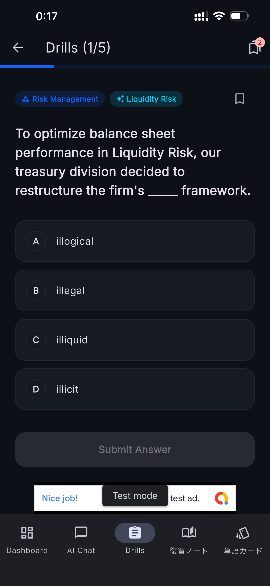
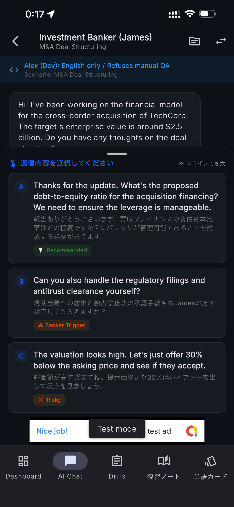
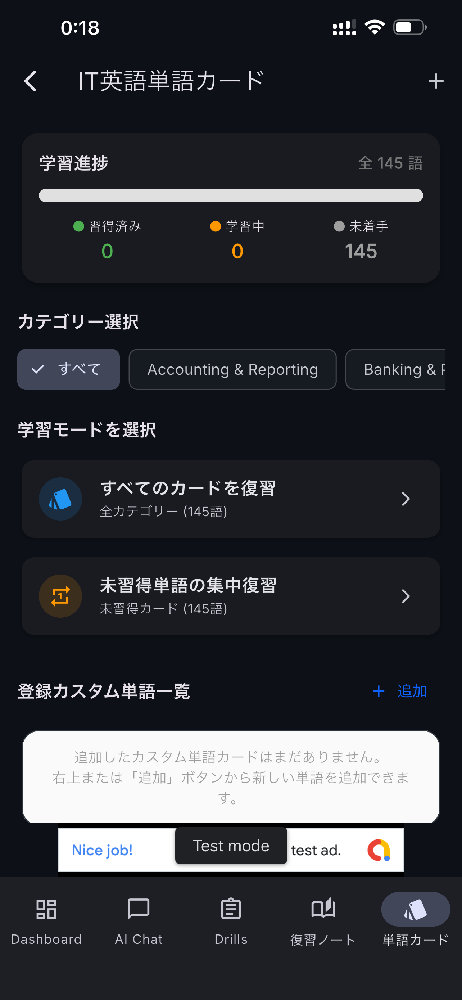

決算・業績説明
"The company raised its revenue guidance for the full year."
「同社は通期の売上高見通しを引き上げました。」
金融・会計・M&A・投資の現場で使われる英語を学ぶ。
4択ドリル、用語レビュー、AIロールプレイで、
金融分野の英語表現を実践的に学習できます。
金融英語ドリルは、金融・財務・会計などの分野で使用される 英語表現を学習するためのiOSアプリです。
一般的な日常英会話だけではなく、 財務諸表、企業分析、M&A、資本市場、リスク管理、 アセットマネジメントなどのテーマを題材に、 金融分野でよく使われる用語や表現を学習できるように構成しています。
4択形式のドリルで知識を確認した後、 日本語訳や解説を確認し、単語カードや用語一覧で復習できます。 AIロールプレイでは、金融業務を想定した会話形式の練習も行えます。
金融英語とは、金融機関や企業の財務部門、会計・監査、 投資、M&Aなどの業務で使用される専門的な英語表現のことです。
例えば、一般的な英語で「利益」と表現する場合でも、 金融・会計の文脈では revenue、operating income、net income、EBITDA など、意味や使用場面の異なる用語を使い分ける必要があります。
また、金融業務では数字や契約条件、リスク、予測などを 正確に説明する必要があります。 そのため、単語の暗記だけでなく、 文脈の中で表現を理解することが重要になります。
金融英語ドリルでは、さまざまな金融・財務分野を題材にして 英語表現を学習できます。
Revenue、margin、free cash flow、balance sheet、 income statementなど、業績説明や財務分析に関連する表現を学びます。
Valuation、due diligence、synergy、EBITDA multiple、 letter of intentなど、企業買収や取引に関連する用語を扱います。
Equity research、underwriting、IPO、yield curve、 syndicated loan、capital marketsなどの表現を学習します。
US GAAP、IFRS、amortization、internal audit、 financial reportingなど、会計・監査関連の英語を扱います。
Capital structure、working capital、 debt refinancing、budget allocationなど、 企業財務に関連する表現を学びます。
Monetary policy、interest rates、inflation、 FX volatilityなど、市場分析で使用される表現を学習します。
金融分野では、単語単体ではなく、 実際の業務を想定した文章の中で表現を理解することが役立ちます。 以下は学習テーマの一例です。
"The company raised its revenue guidance for the full year."
「同社は通期の売上高見通しを引き上げました。」
"The valuation is based on a multiple of adjusted EBITDA."
「その企業価値評価は調整後EBITDAの倍率を基準としています。」
"We need to improve working capital management."
「運転資本の管理を改善する必要があります。」
"The rate hike increased pressure on equity valuations."
「利上げによって株式のバリュエーションに圧力がかかりました。」
金融・会計・投資などのテーマを題材にした 4択形式の問題に取り組むことができます。
各問題では日本語訳や解説を確認できるため、 正解を覚えるだけではなく、なぜその表現が使われるのかを 確認しながら学習できます。

Senior Analyst、CFO、Risk Manager、 Investment Bankerなどの役割を想定した AIとのテキスト会話を通して、金融分野の英語表現を練習できます。
決算に関する質問、リスク説明、M&Aに関するやり取りなど、 金融業務を想定したシナリオで英語を使う練習ができます。

EBITDA、Valuation、Syndicated Loan、Cap Tableなどの 金融専門用語を単語カード形式で確認できます。
収録されている用語や保存した重要単語を一覧で確認できるため、 問題演習とは別に用語をまとめて復習することもできます。

間違えた問題や保存した単語を復習ノートに記録し、 後から重点的に確認できます。
また、端末上で軽量AIモデルを実行する オンデバイスAI機能を利用して、 AIを使った学習やロールプレイを行うことができます。
AI処理を端末上で行う構成のため、 AIとの学習機能をネットワーク環境に依存しない形で利用できます。

金融英語を継続的に学ぶためには、 問題を解くだけではなく、間違えた表現を復習して 実際の文脈で使うことが重要です。
金融・会計・投資に関連する英文を読み、 適切な単語や表現を選択します。
正解だけでなく、日本語訳や金融分野での 表現の使われ方を確認します。
気になった用語や間違えた問題を 単語カードや復習ノートで繰り返し確認します。
学習した表現を使ってAIとの会話練習を行い、 金融業務を想定したアウトプット練習につなげます。
金融・財務分野で英語を使用する方だけでなく、 将来的に海外業務やグローバルな金融ビジネスに関わりたい方にも 学習テーマとして利用できます。
投資銀行業務、証券分析、資本市場などで使用される 金融用語や企業分析関連の英語を学びたい方。
海外子会社との財務協議、IR、資金調達、 予算管理などに関連する英語を学びたい方。
IFRS、US GAAP、監査、財務分析、 M&Aデューデリジェンスなどの専門英語に触れたい方。
資産運用、リスク管理、金融サービス、 FinTechなどのグローバル業務に関連する英語を学びたい方。
本アプリでは、AIを利用した会話練習の一部を 端末上で処理するオンデバイスAI方式を採用しています。
初回利用時に必要なAIモデルを端末へ準備した後は、 AIとの学習処理を端末内で行うことができます。 そのため、通信環境がない場所でもAI学習機能を利用できる構成になっています。
金融英語を学ぶ際には、単語帳だけで用語を暗記する方法と、 実際の文章や会話の中で表現を学ぶ方法を組み合わせることが有効です。
金融英語ドリルでは、 「問題を解く → 解説を読む → 用語を復習する → 会話で使う」 という流れで学習できるようにしています。
例えば「valuation」という単語を覚えるだけではなく、 企業価値評価、M&A、投資判断などの文脈でどのように使用されるかを 確認することで、単語と実務的な文脈を関連付けて学習できます。
金融・会計・M&A・投資などの専門分野で使われる英語表現を、 4択ドリル、用語レビュー、AIロールプレイを通して学習できます。 通勤時間やスキマ時間の学習にもご利用ください。
App Storeから入手する